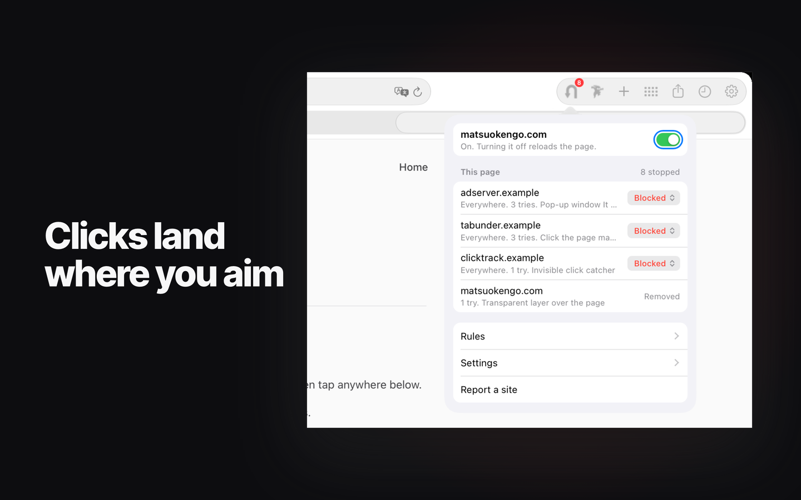
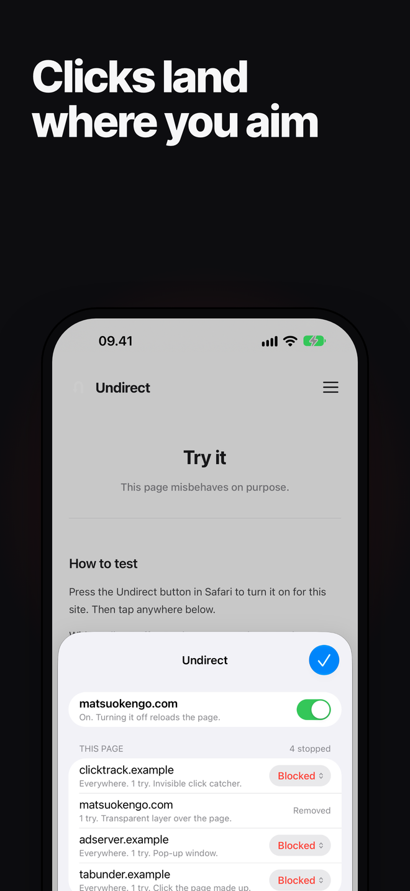
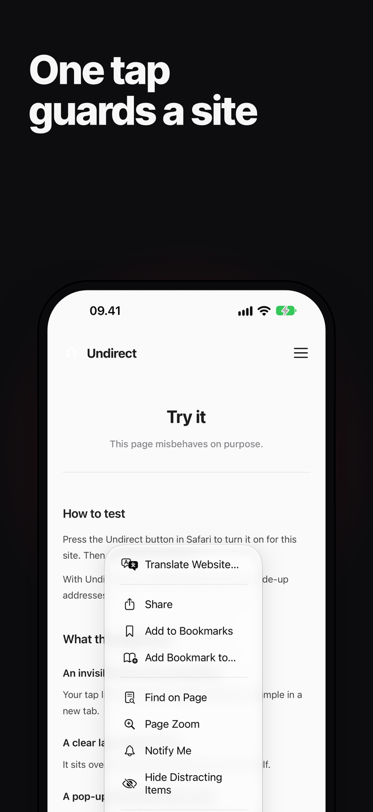
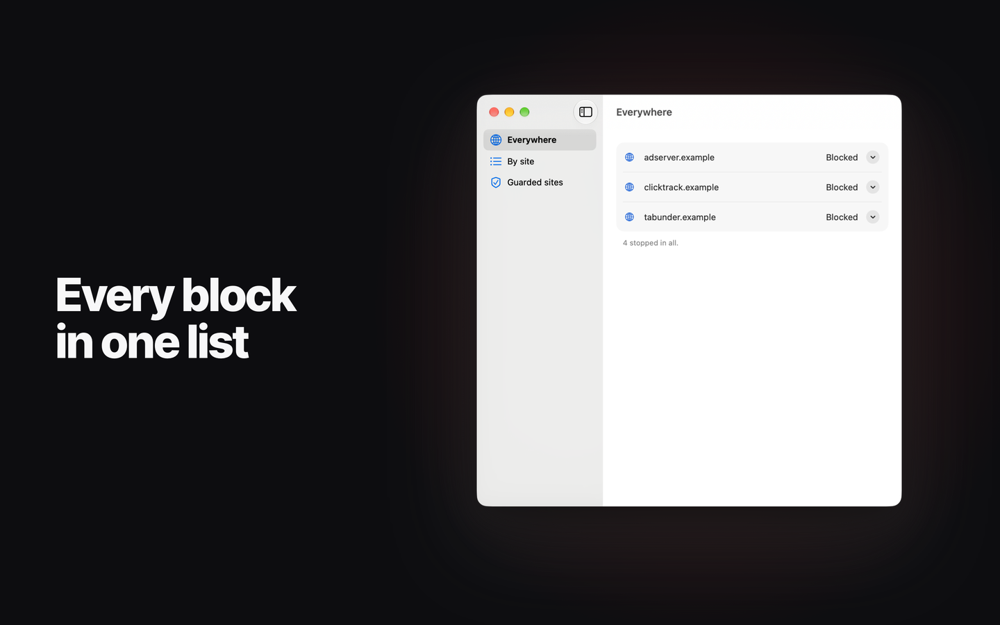

Undirect
Safari extension that stops pages taking your click and lists every site they tried to send you to.
- Swift
- SwiftUI
- Safari Web Extension
- JavaScript




Safari extension that stops pages taking your click and lists every site they tried to send you to.



